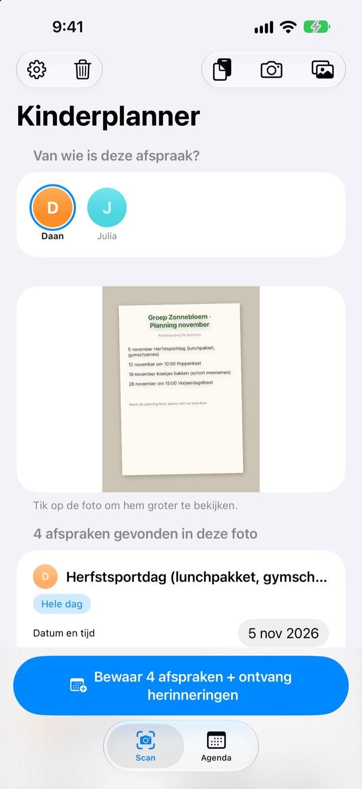
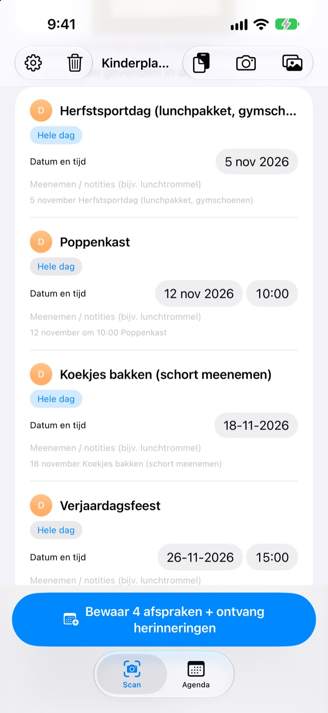
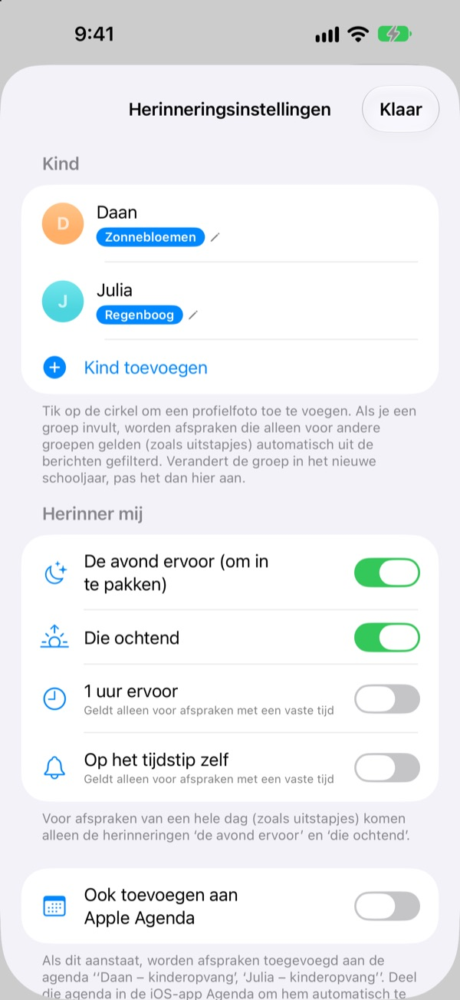
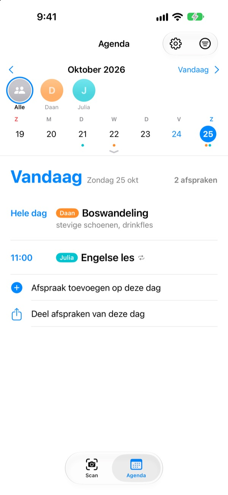

Eén foto is genoeg.
Wij geven een seintje.
Fotografeer de maandkalender die je van de opvang meekrijgt. Kinderplanner leest de data, tijden en namen van de activiteiten en zet ze in één keer in je agenda. De avond voor het uitje, om 20.00 uur, komt de herinnering: vergeet het lunchtrommeltje niet.
Alle functies zijn gratis. Je foto's verlaten je iPhone nooit.

Maak een foto van een briefje
Hier is een voorbeeldbriefje met de activiteiten van volgende maand. Maak een foto en net als in de app worden de activiteiten en wat er mee moet eruit gehaald, en de herinneringen ingepland op de tijden die je kiest.
Neem je de nieuwsbrief van de opvang nog over in je agenda?
Vijf, zes activiteiten per maand, en elke keer moet er iets anders mee: lunchtrommel, gymkleren, een schort. De kalender op de koelkast zie je niet onderweg naar je werk, en je denkt er altijd pas dezelfde ochtend aan. Kinderplanner maakt van dat papiertje agenda-afspraken en herinneringen.
Eén foto, een hele maand
Maandrooster, ouderbrief of los briefje: maak een foto of kies er een uit je fotobibliotheek, en data, tijden en namen van activiteiten worden voor je gelezen. Je kunt ook een bericht van de opvang plakken; woorden als „morgen” of „deze vrijdag” worden echte data.
Voor je bewaart, pas je titel, datum of meeneemlijst meteen aan en veeg je weg wat je niet nodig hebt. Vul de groep van je kind in en activiteiten alleen voor andere groepen vallen vanzelf af.

De avond ervoor een seintje
Kies uit 20.00 uur de avond ervoor, 7.30 uur die ochtend, 1 uur ervoor of precies op tijd. Wat er mee moet staat in de herinnering, zodat de tas op tijd klaar is.
Met Apple Agenda komen de afspraken in een agenda met de naam van je kind, en niets wordt dubbel toegevoegd.

Meer kinderen, het hele gezin
Elk kind krijgt een eigen kleur. Bekijk ze allemaal samen of één voor één; aan de hand van eerdere afspraken raadt de app voor wie een nieuw briefje is.
Stuur een uitnodigingslink en je partner, opa en oma of de oppas zien en bewerken dezelfde afspraken. Een widget op het beginscherm laat zien wat eraan komt.

In drie stappen aan de slag
- 1
Voeg je kind toe
Naam en groep. Een profielfoto kan later ook.
- 2
Fotografeer het briefje
Recht van voren en met scherpe tekst wordt het het best gelezen.
- 3
Controleer en bewaar
Sta meldingen toe en de herinneringen komen op het gekozen moment.
Wanneer komen de herinneringen
- 20.00 uur de avond ervoor
- Om in te pakken. Standaard aan
- 7.30 uur die ochtend
- Wat er vandaag is. Standaard aan
- 1 uur ervoor
- Alleen bij activiteiten met een tijd
- Op het tijdstip zelf
- Alleen bij activiteiten met een tijd
Activiteiten van een hele dag, zoals een uitje, krijgen alleen de herinnering de avond ervoor en die ochtend. Zet ze in de instellingen aan of uit wanneer je wilt.
Alle functies zijn gratis
Gratis
- Activiteiten lezen uit foto's en berichten
- Aanpassen voor je bewaart, andere groepen wegfilteren
- Herinneringen de avond ervoor, 's ochtends, 1 uur ervoor en op tijd
- Een kleur per kind en één gezamenlijke agenda
- Synchronisatie met Apple Agenda
- Delen met het gezin via een link
- Widget op het beginscherm
Steun de ontwikkelaar
- In de instellingen kun je een kleine fooi geven, zoveel je wilt
- Een fooi ontgrendelt niets. De app werkt zonder precies hetzelfde
Geen advertenties, geen abonnement.
Veelgestelde vragen
Welke foto's werken?
Maandkalenders in een rooster, nieuwsbrieven in lopende tekst en losse briefjes of flyers. Een foto recht van voren met scherpe tekst wordt het best gelezen. Je kunt ook meerdere foto's tegelijk kiezen en scannen.
Er ontbreken een paar activiteiten of een titel bevat een typfout.
Handschrift of vage tekst is soms lastig te lezen. Pas titel, datum of meeneemlijst direct in de lijst aan, of veeg weg wat je niet nodig hebt. Een ontbrekende activiteit voeg je toe met „Afspraak handmatig toevoegen” op het tabblad Scan, en daarna bewaar je opnieuw.
Ik krijg geen herinneringen.
Controleer bij Instellingen > Berichtgeving > Kinderplanner of meldingen zijn toegestaan. In de instellingen van de app (⚙️) kies je ook welke herinneringen je wilt krijgen.
Er komen activiteiten van andere groepen mee.
Vul in de instellingen de naam van de groep van je kind in, dan worden activiteiten alleen voor andere groepen weggefilterd. Gaat je kind naar een andere groep, dan pas je het alleen daar aan.
Ik heb meer dan één kind.
In de instellingen voeg je zoveel kinderen toe als je wilt, elk met een profielfoto. Kies bij het scannen voor wie de activiteiten zijn: in de agenda heeft elk kind een eigen kleur, met een gezamenlijke weergave en een filter per kind.
Hoe deel ik de planning met mijn partner?
Ga in de instellingen naar „Afspraken delen”, tik op „Nodig mensen uit” en stuur de link in een bericht. De genodigde ziet en bewerkt alle kinderen en afspraken, en wijzigingen van beide kanten verschijnen meteen bij allebei. Dit staat los van Delen met gezin van Apple.
Kan ik ook op andere manieren delen?
Met de deelknop op het tabblad Agenda verstuur je een Kinderplanner-bestand, een agendabestand (.ics) of een samenvatting in tekst. Met „Ook toevoegen aan Apple Agenda” ontstaat een agenda met de naam van je kind; deel die via iCloud in de Agenda-app en het gezin blijft ook bij.
Worden mijn foto's of afspraken ergens heen gestuurd?
Nee. De tekst op je foto's wordt volledig op je apparaat gelezen en de gegevens blijven alleen daar. Afspraken gaan alleen via jouw iCloud als je iemand uitnodigt via „Afspraken delen”, en alleen naar de mensen die je uitnodigt.
Problemen of wensen? Mail naar leeo@kakao.com. We reageren meestal binnen 2 à 3 dagen. Vermeld je apparaatmodel en iOS-versie, dan kunnen we sneller helpen.